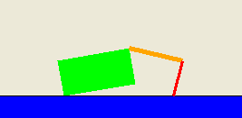

 MDP solvers
and reinforcement learning.
Make a robot crawl.
In this project, you will experiment with both value iteration for known MDPs and Q-learning for reinforcement learning. You will test your systems on a simple Gridworld domain, but also apply them to the task of teaching a simple simulated robot to crawl.
The code for this project contains the following files, which are available in a zip archive:
agent.py |
The file in which you will write your agents. |
mdp.py |
Abstract class for general MDPs. |
environment.py |
Abstract class for general reinforcement learning environments (compare to mdp.py). |
gridworld.py |
The Gridworld code and test harness. |
graphicsGridworldDisplay.py |
Plug-in for the Gridworld graphical display. You can ignore this file entirely. |
graphicsUtils.py |
GUI code. You can ignore this file entirely. |
textGridworldDisplay.py |
Plug-in for the Gridworld text interface. You can ignore this file entirely. |
crawler.py |
The crawler code and test harness. You will run this but not edit it, and so can ignore the contents. |
graphicsCrawlerDisplay.py |
GUI for the crawler robot. You can ignore this file entirely. |
util.py |
Utilities. The class util.Counter may be useful. It now provides a new method, argMaxFair(), which may come in handy for your Q-learner. |
What to submit: You will fill in portions of agent.py during the assignment. You should submit only this file. Please don't change any other files.
Evaluation: Your code will be autograded for technical correctness. Please do not change the names of any provided functions or classes within the code, or you will wreak havoc on the autograder. However, the correctness of your implementation -- not the autograder's judgements -- will be the final judge of your score. If necessary, we will review and grade assignments individually to ensure that you receive due credit for your work.
Academic Dishonesty: We will be checking your code against other submissions in the class for logical redundancy. If you copy someone else's code and submit it with minor changes, we will know. These cheat detectors are quite hard to fool, so please don't try. We trust you all to submit your own work only; please don't let us down. If you do, we will pursue the strongest consequences available to us.
Getting Help: You are not alone! If you find yourself stuck on something, contact the course staff for help. Office hours, section, and the newsgroup are there for your support; please use them. If you can't make our office hours, let us know and we will schedule more. We want these projects to be rewarding and instructional, not frustrating and demoralizing. But, we don't know when or how to help unless you ask.
To get started, run the Gridworld harness in interactive mode:
python gridworld.py -m
You will see the two-exit Gridworld from class and the textbook. Your agent's position is given by the blue dot, and you can move with the arrow keys. Notice that the agent's value estimates are shown, and are all zero. Manual control may be a little frustrating if the noise level is not turned down (-n), since you will sometimes move in an unexpected direction. Such is the life of a Gridworld agent! You can control many aspects of the simulation. A full list is available by running:
python gridworld.py -h
You can check out the other grids, change the noise or discount, change the number of episodes to run and so on. If you drop the manual flag (-m) you will get the RandomAgent by default. Try:
python gridworld.py -g MazeGrid
You should see the random agent bounce around the grid until it happens upon an exit. Not the finest hour for an AI agent; we will build better ones soon.
Next, either use the text interface (-t) or look at the console output that accompanies the graphical output. Do a manual run through any grid you like, and notice that unless you specify quiet (-q) output, you will be told about each transition the agent experiences.
As in Pacman, positions are represented by (x,y) cartesian coordinates and any arrays are indexed by [x][y], with 'north' being the direction of increasing y, etc. By default, most transitions will receive a reward of zero, though you can change this with the living reward option (-r).
Note:The MDP is such that you first must enter a pre-terminal state and then take the special 'exit' action before the episode actually ends (in the true terminal state called TERMINAL_STATE). If you run an episode manually, your total return may be less than you expected, due to the discount rate (-d).
You should definitely look at agent.py, mdp.py, and environment.py closely, and investigate parts of gridworld.py as needed. The support code can be ignored entirely.
Hint: The util.Counter class in util.py will make your life much easier in this assignment. It acts like a dictionary, but has a getCount() method which returns zero for items not in the Counter (rather than raising an exception like a dictionary).
Question 1 (8 points) First, you will write a value iteration agent in ValueIterationAgent, which has been partially specified for you in agent.py. Your value iteration agent is an offline planner, not a reinforcement agent, and so the relevant training option is the number of iterations of value iteration it should run (-i) in its planning phase. It should take an MDP on construction and run value iteration for the specified number of iterations before the constructor returns.
Recall that value iteration computes k-step estimates of the optimal values, Vk. In addition to responding to getAction like any agent, your value agent will return its value estimates through the getValue method. From these k-step value estimates, your agent should synthesize responses to policies and q-values in getPolicy(state) and getQValue(state, action), respectively. Note that if a policy is synthesized from values of depth k (which reflect the next k rewards), that policy will actually reflect the next k+1 rewards (i.e. you return πk+1). Similarly, the q-values will also reflect one more reward than the values (i.e. you return Qk+1). You may assume that 100 iterations is enough for convergence in the questions below.
Select your value agent with the following command, which will compute a policy and execute it 10 times. Press a key to cycle through values, q-values, and the simulation. You should find that the predicted value of the start state and the resulting average reward are quite close (+/- 0.3).
python gridworld.py -a value -i 100 -k 10Some benchmarks: On the default BookGrid, running value iteration for 5 iterations will still leave a 0.0 value for the start state (0,0):
python gridworld.py -a value -i 5After 6 iterations, the start state should have the value 0.21:
python gridworld.py -a value -i 6Your code will be graded as follows. We will provide a new grid and check your values, q-values, and policies for specific iterations and at convergence (e.g. after 100 iterations). Most of the credit will rest on the converged values, but we will verify that if k iterations are passed in that you agent returns exactly Vk, Qk+1, and πk+1.
Important Note: make sure you program the "batch" version of value iteration where each vector Vk is computed from a fixed Vk-1, not the "online" version where one single vector of weights is updated in place.
Analysis Questions: Please fill in the function stubs for the following questions so that they return the answer in the specified format. You may either hard-code your answers or use these functions to generate the answers on the fly. You can see the output to all of these questions via
python agent.py
Question 2 (1 points) How many rounds of value iteration are needed before the start state of MazeGrid becomes non-zero? That is, for what smallest k will Vk be non-zero? The function question2() (in agent.py should return an integer answer.
Note that you can view MazeGrid as text with the following command:
python gridworld.py -g MazeGrid -a value
Question 3 (2 points) Consider the policy learned on BridgeGrid with the default discount of 0.9 and the default noise of 0.2. question3() should return a pair (discount, noise) that changes only one of the default values so that your agent will cross the bridge. A full credit answer will only change either the noise or the discount, but not both.
Question 4 (5 points) On the DiscountGrid, give any parameter values which produce the following optimal policy types or state that they are impossible by returning None:
question4a() through question4e() should each return a 3-item tuple of (discount, noise, living reward).
Note that your value iteration agent does not actually learn from experience. Rather, it ponders its MDP model to arrive at a policy before ever interacting with a real environment. When it does interact with the environment, it simply follows the precomputed policy (e.g. it becomes a reflex agent). This distinction may be subtle in a simulated environment like a Gridword, but it's very important in the real world, where the real MDP is not available.
Question 5 (7 points) You will now write a Q-learning agent, which does very little on construction, but instead learns by trial and error from interactions with the environment through its update(state, action, nextState, reward) method. A stub of a Q-learner is specified in QLearningAgent in agent.py, and you can select it with the option '-a q'. For this question, you must implement the update, getValue, getQValue, and getPolicy methods, but you do not yet need to implement getAction.
With the q-learning update in place, you can watch your Q-learner learn under manual control, using the keyboard:
python gridworld.py -a q -k 5 -mWatch how the agent learns about the state it was just in, not the one it moves to, and 'leaves learning in its wake.'
Question 6 (3 points) Complete your Q-learning agent by implementing an epsilon-greedy action selection in getAction, meaning it chooses random actions epsilon of the time, and follows its current best q-values otherwise.
python gridworld.py -a q -k 100Your final q-values should resemble those of your value iteration agent, especially along well-traveled paths. However, your average returns will be lower than the q-values predict because of the random actions and the initial learning phase.
You can choose an element from a list uniformly at random by calling the random.choice function. You can generate a random number from 0 to 1 uniformly by calling random.random().
Question 7 (2 points) First, train a completely random Q-learner with the default learning rate on the noiseless BridgeGrid for 50 episodes and observe whether it finds the optimal policy.
python gridworld.py -a q -k 50 -n 0 -g BridgeGrid -e 1Now try the same experiment with an epsilon of 0. Is there an epsilon and a learning rate for which it is highly likely (greater than 99%) that the optimal policy will be learned after 50 iterations?
question7() should return EITHER a 2-item tuple of (epsilon, learning rate) OR None if there is none.
Question 8 (2 points) With no additional code, you should now be able to run a q-learning crawler robot:
python crawler.pyIf this doesn't work, you've probably written some code too specific to the
GridWorld problem and you should make it more general to all MDPs. You will receive full credit if the command above works without exceptions.
This will invoke the crawling robot from class using your Q-learner. Play around with the various learning parameters to see how they affect the agent's policies and actions. Note that the step delay is a parameter of the simulation, whereas the learning rate and epsilon are parameters of your learning algorithm, and the discount factor is a property of the environment.
Some questions to ponder (ungraded): For a fixed discount factor, how can you set (or vary) the other parameters so that your agent quickly learns an optimal policy? How does the optimal policy (i.e. gait) learned depend on the discount factor, both qualitatively and quantitatively (in terms of average velocity)? Hint: you probably want to turn epsilon down to near zero before assessing what your agent has learned.